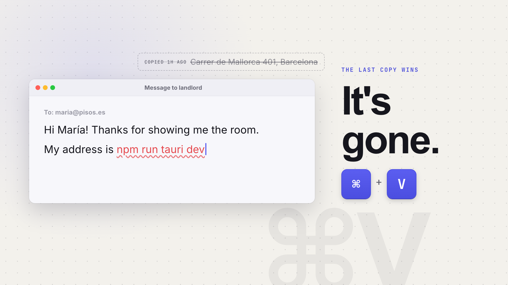
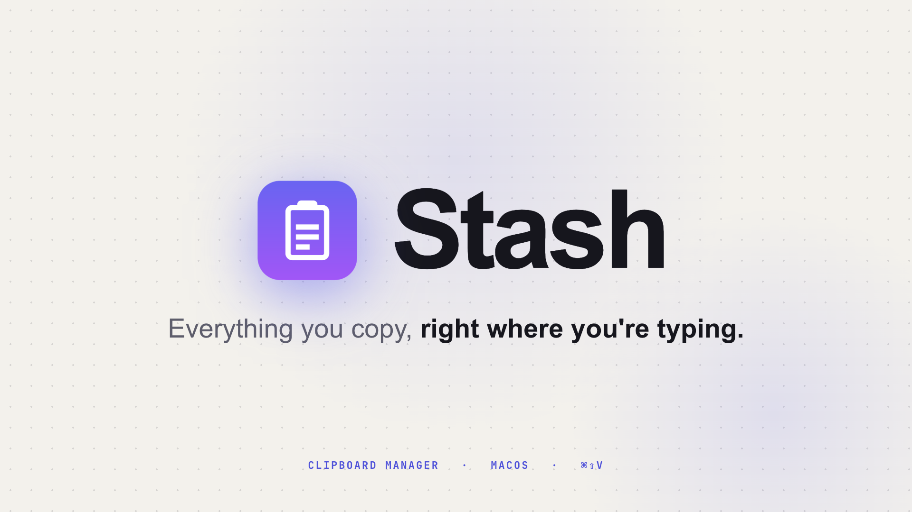
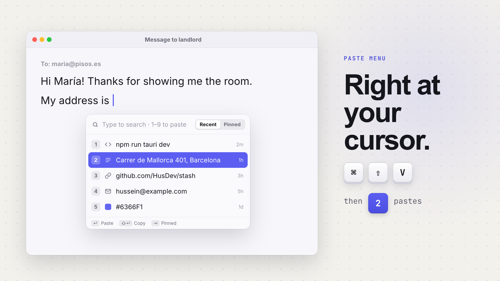
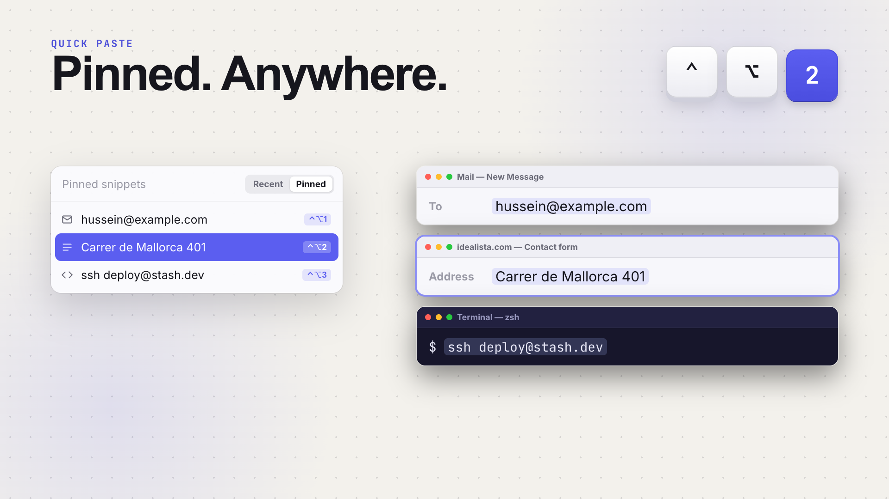
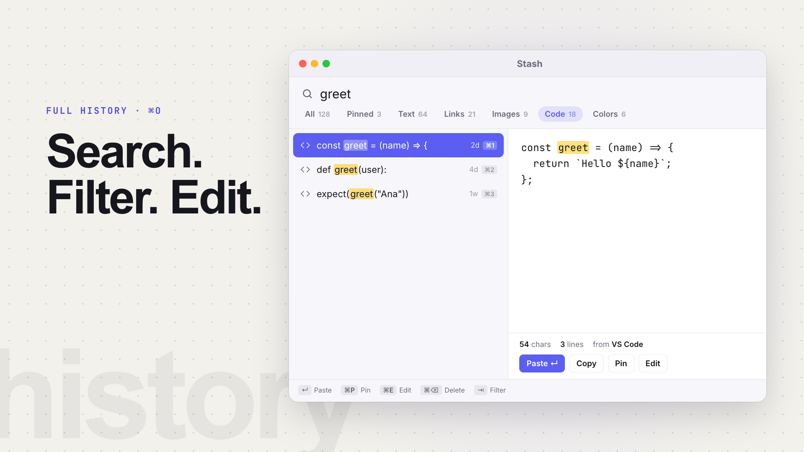
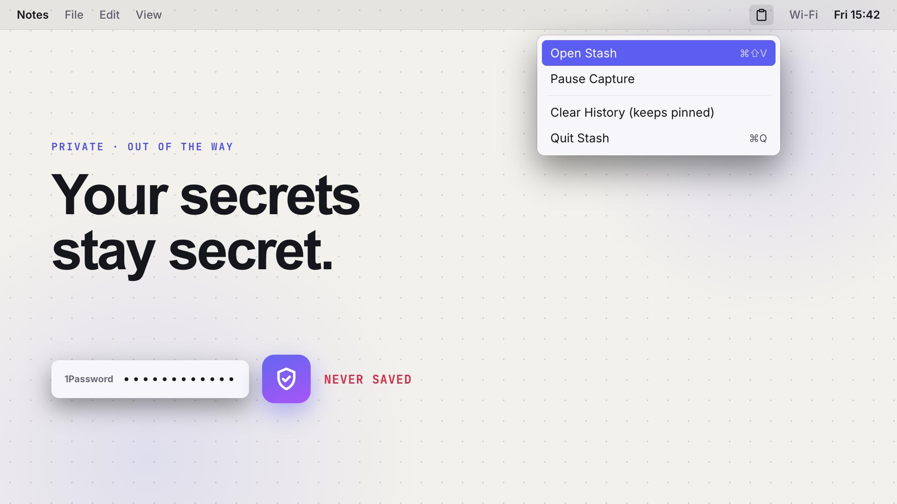
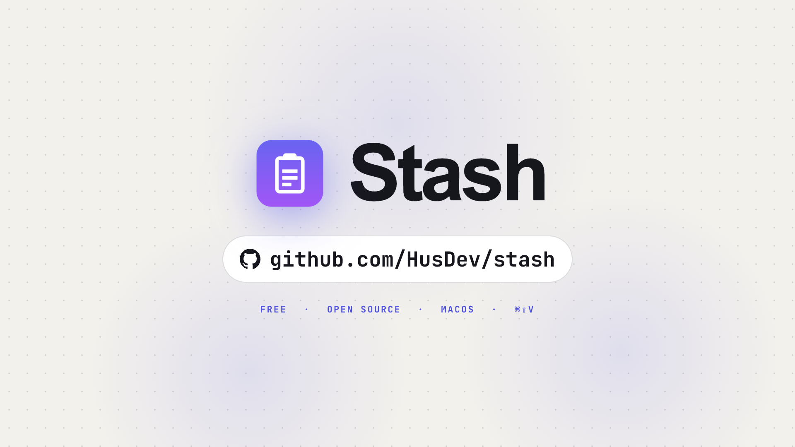

This video tells Mac power users and developers that they can paste anything they've copied, right where they're typing. Sketch pass: layout + copy, no motion yet.

“You copied it an hour ago… and now it's gone.” ⌘V pastes the wrong thing; the address you wanted fades out.

The real icon blooms, then the wordmark and the promise land.

⌘⇧V keycaps → the menu opens at the caret → “2” → the address types in.

⌃⌥ stays pinned while the number steps 1→2→3 and each snippet lands in a different app.

The window floats in; “greet” types into search; the filter chips step to Code; Edit pulses.

A password copy bounces off the shield (never saved); the menu bar drops down.

Lockup + github.com/HusDev/stash.